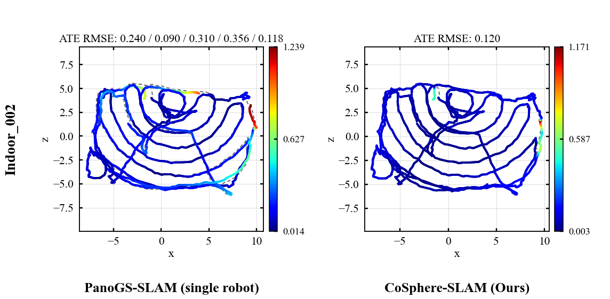
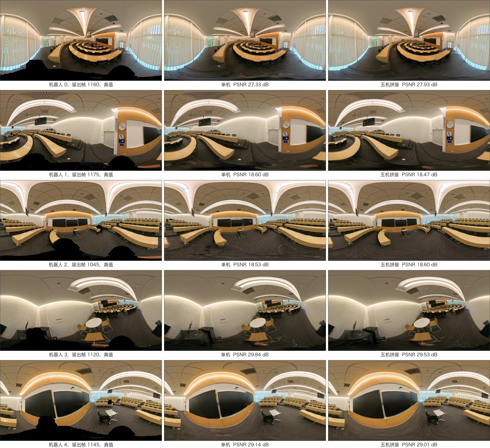

01Overview
TL;DRCoSphere-SLAM lets a team of robots with 360° cameras build one shared Gaussian map. Each robot runs the single-robot panoramic system PanoGS-SLAM; the robots are then associated directly on the sphere, joined in a global pose graph whose constraints do not depend on monocular depth scale, and refined together with exact spherical Gaussian rendering. On Holo360D Indoor_002 with five handheld panoramic robots, the mean per-robot keyframe ATE goes from 0.223 m (each robot alone) to 0.083 m.
02Method
Spherical Inter-Robot Association
- Ring descriptors for place retrieval, invariant to heading.
- SO(3) spherical correlation for the relative rotation between panoramas.
- Dense verification before a match is accepted.
Global Pose-Graph Optimization
- Bearing-based Sim(3) constraints, independent of monocular depth scale.
- Odometry edges taken from the current trajectory of each robot.
- Pairwise consistency checks and a robust kernel against wrong loops.
Global Spherical Joint Refinement
- Exact spherical Gaussian rendering.
- Coarse-to-fine refinement of submap and keyframe poses.
- Per-keyframe exposure and cross-robot free-space consistency.
Each robot runs PanoGS-SLAM, our single-robot panoramic Gaussian SLAM, which supplies the submaps, keyframes and trajectories that the three modules operate on.
03Results
Holo360D Indoor_002, five robots, each a handheld panoramic camera recording its own sequence of the same lecture hall.
Per-robot trajectory error
| Keyframe ATE RMSE (m) | Robot 0 | Robot 1 | Robot 2 | Robot 3 | Robot 4 | Mean |
|---|
Table 1. Keyframe ATE RMSE per robot on Holo360D Indoor_002, each robot aligned to its reference trajectory by its own Sim(3). Lower is better. When all five CoSphere-SLAM trajectories share a single Sim(3) alignment, the ATE is 0.120 m.
Trajectories

Held-out views of the merged map

| Held-out PSNR (dB) | Robot 0 | Robot 1 | Robot 2 | Robot 3 | Robot 4 |
|---|
Table 2. PSNR of the held-out panoramas in Figure 3. The merged five-robot map keeps the rendering quality of the single-robot maps, within 0.6 dB on every robot.
04BibTeX
@article{cosphereslam2026,
title = {{CoSphere-SLAM}: Collaborative Panoramic Gaussian {SLAM} on the Sphere},
author = {Anonymous Authors},
year = {2026}
}